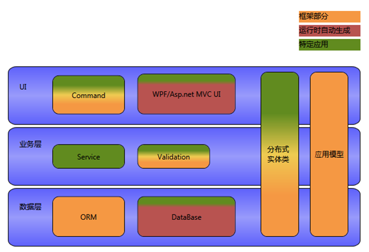
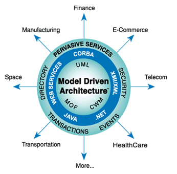
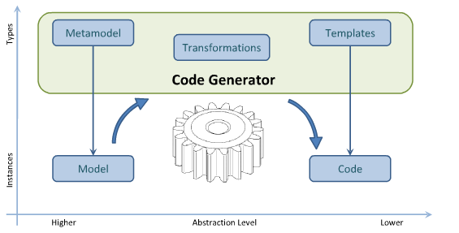

为了实现整个程序的可配置性，框架使用了模型驱动架构（Model Driven Architecture，MDA）的架构思想。
Rafy 中，框架就是各类元数据，它们包括：领域实体元数据、界面元数据、ORM 元数据、其它零散元数据。与其它 MDA 的平台的不同在于，这些元数据完全由内存对象表示，并没有用 Xml 持久化。而这些元数据的配置，也主要是由代码进行配置（只有少部分元数据支持 Xml 配置），这样就使得开发人员可以封装更高级的配置函数，提高了开发效率。
领域实体元数据、ORM 元数据
领域实体元数据由类型 Rafy.MetaModel.EntityMeta 表示。它是实体框架运行时的基础，通过对它的配置，可以使得不同的实体表现出不同的行为。
界面元数据由类型 Rafy.MetaModel.View.EntityViewMeta表示（它的两个子类 Rafy.MetaModel.View.WPFEntityViewMeta 及 Rafy.MetaModel.View.WebEntityViewMeta
分别用于配置 WPF 界面及 Web 界面）。
下图是 Rafy 的多层结构图，在各层中，都有相应的元数据（应用模型）支撑。只有绿色的部分是需要开发人员编写的。  模型驱动架构  模型转换 三大模型 代码生成  关于模型驱动架构的详细概念，参考：《MDA》。 其他资源
ORM 元数据是由 EntityMeta 中的一些属性表示的： EntityMeta.TableMeta、EntityPropertyMeta.ColumnMeta
等。
对领域实体元数据及 ORM 元数据的配置，通过使用 Rafy.MetaModel.EntityConfig/// <summary>
/// 仓库 配置类。
/// 负责 仓库 类的实体元数据、界面元数据的配置。
/// </summary>
internal class WarehouseConfig : JXCEntityConfig<Warehouse>
{
/// <summary>
/// 配置实体的元数据
/// </summary>
protected override void ConfigMeta()
{
//启用客户端缓存。
Meta.EnableClientCache();
//配置实体的所有属性都映射到数据表中。
Meta.MapTable().MapAllProperties();
}
}
界面元数据
它是界面生动生成框架的输入。通过配置界面元数据，可以控制生成不同的界面。
对界面元数据的配置，通过使用 Rafy.MetaModel.WPFViewConfig/// <summary>
/// 货品的视图配置。
/// </summary>
internal class ProductWPFViewConfig : WPFViewConfig<Product>
{
protected override void ConfigView()
{
View.DomainName("商品").HasDelegate(Product.MingChengProperty);
//界面生成时，使用以下命令
View.UseDefaultCommands().UseCommands(typeof(ResetProductAmountCommand));
//表单使用以下布局
View.UseDetailPanel<ProductForm>();
//表格中的属性，使用以下布局
using (View.OrderProperties())
{
View.Property(Product.BianMaProperty)
.HasLabel("编码").ShowIn(ShowInWhere.All).ShowInDetail(contentWidth: 0.7, columnSpan: 2);
View.Property(Product.MingChengProperty)
.HasLabel("名称").ShowIn(ShowInWhere.All).ShowInDetail(contentWidth: 600, columnSpan: 2);
//...
}
}
}
Rafy 模型驱动架构
模型驱动架构附 - 模型驱动架构


参见
MDA